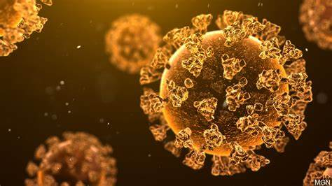

Travelogue

Sinquerim Beach is a very beautiful beach in Goa. You can ride in jetty there also. There it is a well, in which there is fresh water without salt!!! It is miracle that salty sea and the fresh water well are on the same beach. By the way it's water is also very clean. I hope you will also enjoy there as I enjoyed.
Movies
I will eat your Pancreas is an emotinal movie with having genre of slice of life, emotional etc. The story revolves around a boy and a girl. The name of thr boy is Haruki Shiga whereas the name of the girl is Sakura. Sakura's pancreas doesn't work and Haruki comes to know it after reading her diary, Life with Death. Enjoy this movie! I will not give more information so see it yourself!!!
The Surroundings
-

In an effort to be more environmentally responsible, LEGO have said they aim to stop manufacturing bricks made of plastic resin and are considering other options, which could include hemp. According to Telegraph World, the company makes 60 billion blocks a year. While LEGO want to replace the harmful plastic used in their products, they also require the new material to meet the high standards that allow the blocks to work as they always have, especially with the effective “clicking” together is a key aspect of the iconic coloured block.
-

In the ongoing vaccination drive, Maharashtra on October 26 has administered both doses of the COVID-19 vaccine to over 3 crore citizens. So far, 9,61,92,441 doses have been administered in the state. As per the state government data 6,60,78,096 individuals aged between 18 and 44 years received their first vaccine dose and 3,01,4,345 received their second dose since the inoculation drive for this age group began on May 1.